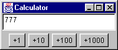

41.3 Umwandlung einer Applikation in ein Applet
In der Praxis steht man manchmal vor der Aufgabe, eine bestehende
Applikation in ein Applet umzuwandeln, etwa wenn ein vorhandendes
Programm in eine HTML-Präsentation eingebunden werden soll. Da
die Unterschiede zwischen Applets und Applikationen nicht so groß
sind, kann diese Konvertierung - etwas Glück vorausgesetzt -
mit überschaubarem Aufwand erledigt werden. Wir wollen in diesem
Abschnitt die prinzipielle Vorgehensweise erläutern und auf einige
der dabei möglicherweise auftretenden Besonderheiten eingehen.
41.3.1 Die Beispiel-Applikation
Als Beispiel soll ein sehr einfaches Programm verwendet werden. Es
enthält ein Textfeld mit einem Zahlenwert und vier Buttons, mit
denen die Zahl um 1, 10, 100 oder 1000 erhöht werden kann. Die
Dialogelemente werden in einem Frame
angeordnet, der von der main-Methode
erzeugt wird. Seine Größe und Position werden ebenfalls
explizit vorgegeben:
001 /* Calculator.java */
002
003 import java.awt.*;
004 import java.awt.event.*;
005
006 public class Calculator
007 extends Frame
008 implements ActionListener
009 {
010 private TextField tf;
011
012 public Calculator()
013 {
014 super("Calculator");
015 addWindowListener(new WindowClosingAdapter(true));
016 setBackground(Color.lightGray);
017 setLayout(new GridLayout(2, 1));
018 tf = new TextField("777");
019 add(tf);
020 Panel p = new Panel();
021 for (int i = 1; i <= 1000; i *= 10) {
022 Button b = new Button("+" + i);
023 b.addActionListener(this);
024 p.add(b);
025 }
026 add(p);
027 }
028
029 public void actionPerformed(ActionEvent event)
030 {
031 String cmd = event.getActionCommand();
032 int n1 = Integer.parseInt(tf.getText());
033 int n2 = Integer.parseInt(cmd.substring(1));
034 tf.setText("" + (n1 + n2));
035 }
036
037 public static void main(String[] args)
038 {
039 Calculator calc = new Calculator();
040 calc.setLocation(100, 100);
041 calc.setSize(200, 85);
042 calc.setVisible(true);
043 }
044 }
|
Calculator.java |
Listing 41.5: Die Calculator-Applikation
Die Ausgabe des Programms nach dem Starten sieht so aus:

Abbildung 41.3: Die Calculator-Applikation
41.3.2 Variante 1: Das Programm als Popup-Fenster
Die einfachste Möglichkeit, die Applikation als Applet laufen
zu lassen, besteht darin, die aus Frame
abgeleitete Fensterklasse zu erhalten und aus dem Applet heraus als
eigenständiges Hauptfenster aufzurufen. Dazu schreiben wir ein
Hilfsapplet CalculatorApplet1,
das den ehemals in main
enthaltenen Code in der init-Methode
ausführt. Um das Fenster sichtbar zu machen, wird der Aufruf
von setVisible(true) in die
Methode start
verlegt und in stop
wird setVisible(false) aufgerufen.
Das Fenster wird dadurch immer dann angezeigt, wenn die Seite mit
dem Applet im Browser sichtbar ist:
001 /* CalculatorApplet1.java */
002
003 import java.awt.*;
004 import java.applet.*;
005
006 public class CalculatorApplet1
007 extends Applet
008 {
009 Calculator calc;
010
011 public void init()
012 {
013 calc = new Calculator();
014 calc.setLocation(100, 100);
015 calc.setSize(200, 130);
016 }
017
018 public void start()
019 {
020 calc.setVisible(true);
021 }
022
023 public void stop()
024 {
025 calc.setVisible(false);
026 }
027 }
|
CalculatorApplet1.java |
Listing 41.6: Ein Applikations-Applet im Popup-Fenster
Das Applet kann mit folgender HTML-Datei im Browser angezeigt werden:
001 <html>
002 <head>
003 <title>CalculatorApplet1</title>
004 </head>
005 <body>
006
007 <h1>CalculatorApplet1</h1>
008
009 <applet code="CalculatorApplet1.class" width=200 height=100>
010 CalculatorApplet1
011 </applet>
012
013 </body>
014 </html>
|
CalculatorApplet1.html |
Listing 41.7: HTML-Datei zum Aufruf des Beispiel-Applets
Die vorgeschlagene Methode ist einfach umzusetzen, hat aber einige
Nachteile:
- Eigenständige Hauptfenster werden im Browser mit einem zusätzlichen
Warnhinweis angezeigt (um das Erstellen von Trojanern zu erschweren).
Wir haben daher die Höhe des Fensters von 85 auf 130 Pixel erhöht.
- Der in dem WindowClosingAdapter
untergebrachte Aufruf zum Beenden des Programms beim Betätigen
des Schließen-Buttons ist im Browser aus Sicherheitsgründen
nicht erlaubt und löst eine AppletSecurityException
aus. Auch dispose
sollte nicht aufgerufen werden, da das Fenster unter Umständen
noch einmal benötigt wird.
41.3.3 Variante 2: Erstellen eines gleichwertigen Applets
Um den eigentlichen Vorteil von Applets, das Einbetten von
laufenden Programmen in HTML-Seiten, ausnutzen zu können, müssen
wir etwas mehr Aufwand treiben. Wir wollen uns dazu die Schritte ansehen,
um aus unserer Beispielapplikation ein gleichwertiges Applet zu machen:
- Die Klassen Frame
und Applet
haben mit Container
eine gemeinsame Basisklasse. Die Funktionalität zum Hinzufügen
von Dialogelementen und Anordnen derselben mit Hilfe eines Layoutmanagers
steht also auch in Applet
zur Verfügung. Im ersten Schritt ändern wir daher einfach
die Basisklasse und leiten unser zukünftiges Applet von Applet
ab. Zusätzlich muss das Paket java.applet
importiert werden.
- Nun entfernen wir den Konstruktor und platzieren den dort befindlichen
Code in der init-Methode.
Der Aufruf des Superklassenkonstruktors kann entfallen, weil ein Applet
keine Titelzeile hat. Auch alle eventuell vorhandenen Aufrufe von
setTitle
müssen entfernt werden. Die Beschriftung des Applets kann in
der HTML-Datei erfolgen.
- Falls der Frame
keinen expliziten Layoutmanager gesetzt hat, sondern mit dem vordefinierten
BorderLayout
gearbeitet hat, muss ein Aufruf von setLayout
erfolgen. Applet
verwendet nämlich standardmäßig ein FlowLayout.
- Nun müssen die Aufrufe der Frame-
bzw. Window-spezifischen
Methoden entfernt werden. In unserem Beispiel betrifft das lediglich
setWindowAdapter,
weitere Beispiele wären setMenuBar,
setIconImage
oder setResizable.
Am einfachsten ist es, das Programm in diesem Stadium zu kompilieren
und die Fehlermeldungen des Compilers auszuwerten.
- Nun sollte noch die main-Methode
entfernt werden. Das Instanzieren des Applets und der Aufruf von setVisible
können entfallen, denn sie werden vom Browser erledigt. Die Position
des Applets ergibt sich aus der HTML-Datei und die Größe
des Applets kann mit Hilfe der Parameter WIDTH
und HEIGHT
im APPLET-Tag festgelegt werden.
Nachdem die Schritte beendet wurden, steht nun (wenigstens in diesem
nicht sehr komplexen Beispiel) ein gleichwertiges Applet zur Verfügung:
001 /* CalculatorApplet2.java */
002
003 import java.awt.*;
004 import java.awt.event.*;
005 import java.applet.*;
006
007 public class CalculatorApplet2
008 extends Applet
009 implements ActionListener
010 {
011 private TextField tf;
012
013 public void init()
014 {
015 setBackground(Color.lightGray);
016 setLayout(new GridLayout(2, 1));
017 tf = new TextField("777");
018 add(tf);
019 Panel p = new Panel();
020 for (int i = 1; i <= 1000; i *= 10) {
021 Button b = new Button("+" + i);
022 b.addActionListener(this);
023 p.add(b);
024 }
025 add(p);
026 }
027
028 public void actionPerformed(ActionEvent event)
029 {
030 String cmd = event.getActionCommand();
031 int n1 = Integer.parseInt(tf.getText());
032 int n2 = Integer.parseInt(cmd.substring(1));
033 tf.setText("" + (n1 + n2));
034 }
035 }
|
CalculatorApplet2.java |
Listing 41.8: Das gleichwertige Calculator-Applet
Nun kann die HTML-Datei erstellt und das Applet aufgerufen werden:
001 <html>
002 <head>
003 <title>CalculatorApplet2</title>
004 </head>
005 <body>
006
007 <h1>CalculatorApplet2</h1>
008
009 <applet code="CalculatorApplet2.class" width=200 height=85>
010 CalculatorApplet2
011 </applet>
012
013 </body>
014 </html>
|
CalculatorApplet2.html |
Listing 41.9: HTML-Datei zum Aufruf des Beispiel-Applets